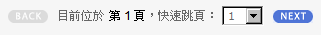

分頁很重要的一個部份就是在使用者介面上，因為多型的原因，基本上我們可以完全不用更動使用者介面而套用不同的分頁器。
在 HTML 部份， Wacow 提供以下樣版供開發者參考或修改：
樣版位置在 /app/common/views/templates/pagination/link.tpl.htm ，其形式如下：
另外一般連結式分頁介面可配合 Wacow 所提供的 pagination.css 來改變其樣式，詳細資訊可參考： Mis Algoritmos::Some styles for your pagination 。
pagination.css 位置在 /public/styles/common/pagination.css
樣版位置在 /app/common/views/templates/pagination/seletor.tpl.htm ，其形式如下：

最後要說明的是， Wacow 分頁機制並沒有處理有關 URL 代換的部份，因為這部份會由樣版的 url 方法來處理。